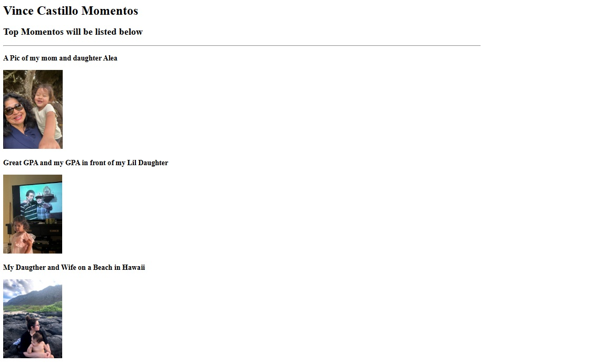

My Portfolio
Vince Castillo
About Me
Welcome to my portfolio! Here are some of my previous projects:
Project 1: Personal Website: Places I love to visit

Project 2: To-Do List App
Project 3: Weather Dashboard
About Me
Contact Me